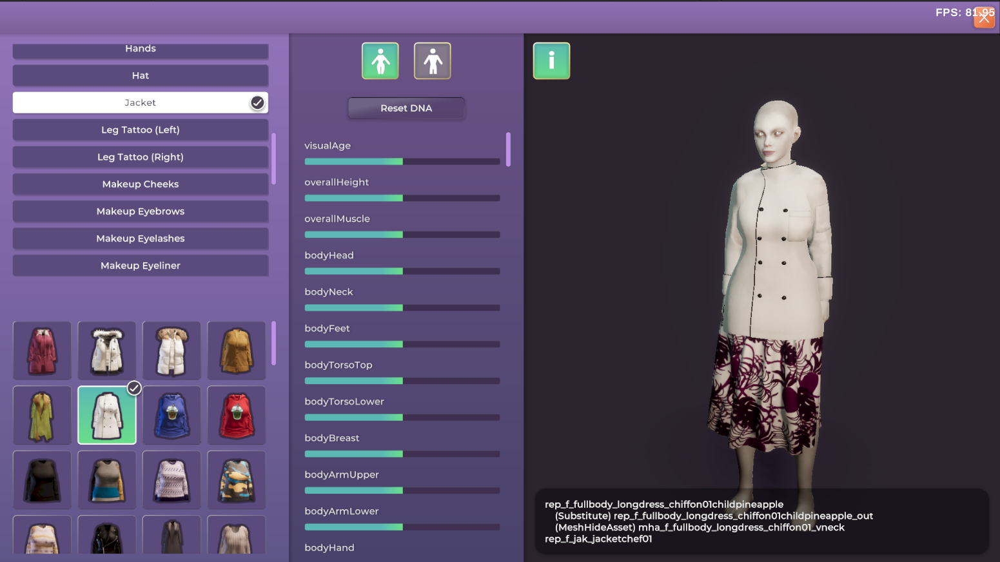

Life by You
Paradox Tectonic
Life by You is a life sim game by Paradox Tectonic. I helped as a technical artist on lighting, modder tools, shaders, vfx, and animations.
Lighting
I added ambient interior lighting that scales with time of day and culled lights + shadows so they fade in and out based on distance to the camera. I also added support for allowing players to turn on and off lights and made lights automatically turn on/off when humans enter and exit a building.
Time of Day
I tuned the time of day lighting and postprocessing system and added support for blending between postprocessing volumes and other lighting data based on the current time. In the final screenshot, I simulated and baked a fire simulation in Blender to make the campfire effect.

Modder Tools
To fully test clothing assets, artists needed to view the clothing layered on top of other clothing and on characters with different body proportions. I created a clothing test tool to quickly build outfits and adjust character sliders.
To create interactions and behaviors in the game we developed a visual scripting system that runs in-game. I skinned the editor and added a number of scripting nodes to the system.
Characters are created with the UMA unity asset which has a complex setup. I created a wizard to generate the UMA-specific assets for every type of clothing asset in the game. The wizard itself is a ScriptableObject so that the UMA assets can be quickly re-generated if the base models or textures change.
Face Texture Baking System
One request from the artists was to be able to have a variable number of textures on the face, for tattoos and details like moles and wrinkles. Initially the face was a single shader but we broke it into a multi-step baking process where an albedo, normal, and mask texture are all composited separately and put together in a final shader. The final shader only needs four textures but supports a wide amount of customization.
First shader of the face texture system
Repeatable tattoo shader of the face texture system
Final shader of the face texture system
Face with multiple placeable tattoos applied
Bed Sheet Effect
To have characters under bed sheets, I created a vertex shader that offsets the bed sheets based on colliders attached to the human. This allows the humans to move under the covers and still show motion on the bed sheets.